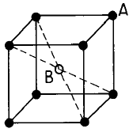
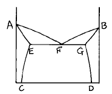
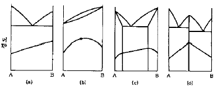
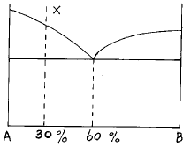
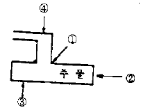

주조산업기사 (2003-05-25 기출문제)
1과목: 금속재료
1. 다음 중 불변강이 아닌 것은?
- 인바(invar)
- 엘린바(elinvar)
- 프라티나이트(platinite)
- 수퍼말로이(supermalloy)
(정답률: 알수없음)

2. 탄소 함유량에 따라 탄소강의 용도로 분류한 것 중 잘못 설명된 것은?
- 0.⑤-0.3%C : 강도만을 요구하는 경우
- 0.3-0.45%C : 가공성과 강인성을 동시에 요구하는 경우
- 0.45-0.65%C :강인성과 내마모성을 동시에 요구하는 경우
- 0.65-1.2%C : 내마모성과 경도를 동시에 요구하는 경우
(정답률: 알수없음)
3. 황동의 자연균열 방지책이 아닌 것은?
- 도료
- 아연도금
- 저온 응력제거 풀림
- 산화물 피막형성
(정답률: 알수없음)
4. 형상기억 합금은 변형응력을 가할 때는 일반 금속과 같이 소성변형이 발생한다. 이들 변형은 어느 변태온도 이상의 범위로 가열하면 변형 전의 상태로 돌아가는 특성을 가지고 있다. 이 변태온도는?
- Ao
- A6
- Ar'
- Ar"
(정답률: 알수없음)
5. 금속변태 중 동소변태를 틀리게 나타낸 것은?
- 원자배열이 바뀐다.
- 격자배열의 변화가 발생한다.
- 자성변화를 발생한다.
- 일정온도에서 불연속적인 성질변화를 일으킨다.
(정답률: 알수없음)
6. 구리계 중에서 무급유 베어링(오일레스 베어링)으로 가장 많이 사용되는 것은?
- Cu - Pb – Ni
- Cu - Pb - Aℓ
- Cu - Sn – Cr
- Cu - Sn - C
(정답률: 알수없음)
7. 분말을 제조하는 분말 야금의 제조 공정이 아닌 것은?
- 산 화
- 혼 합
- 압축 성형
- 예비 소결
(정답률: 알수없음)
8. 금속이 용해할 때는 시간이 지나도 온도가 올라가지 않는다. 즉 금속 전부가 용해 해야만 온도가 올라가는 현상은?
- 열전도
- 비열
- 용융 잠열
- 비중
(정답률: 알수없음)
9. 금속판에 힘을 주어 구부리면 변형되는데 그 힘을 없애도 그 변형은 남게 되는 것은?
- 소성변형
- 의탄성변형
- 탄성변형
- 크리프변형
(정답률: 알수없음)
10. 다음 중 섬유강화 금속은?
- NFRP
- FRM
- MEM
- WP
(정답률: 알수없음)
11. 탄소강재에서 구조용과 공구용 강재를 구분하는 탄소함량(%)은?
- 약 0.6
- 약 2.0
- 약 3.5
- 약 6.7
(정답률: 알수없음)
12. 오스테나이트 스테인리스강의 주 성분으로 맞는 것은?
- Ni - Mo – Co
- Cr - W - V
- Cr - Ni – Fe
- Ni - Co - Cu
(정답률: 알수없음)
13. 용융점이 가장 낮은 금속은?
- Ti
- Fe
- Ni
- Aℓ
(정답률: 알수없음)
14. 탄소강에서 충격값을 저하시켜 상온 취성의 원인이 되는 주 원소는?
- Mn
- P
- Si
- S
(정답률: 알수없음)
15. 반도체적 특성을 이용하여 전자 공업에서 많이 사용되고 있는 금속은?
- Ge
- Fe
- S
- Hg
(정답률: 알수없음)
16. 탄소강에서 나타나는 조직과 결정구조가 틀리게 짝지어진 것은?
- α -Fe : BCC
- γ-Fe : FCC
- δ -Fe : HCP
- Fe3C :금 속간화합물
(정답률: 알수없음)
17. PR형 열전대를 이용한 냉접점 20℃에서 미터의 지시온도가 850℃라면 참온도는? (단, 보정계수는 0.5이다)
- 760℃
- 820℃
- 860℃
- 920℃
(정답률: 알수없음)
18. 가공성이 가장 좋은 금속의 결정격자는?
- 면심입방격자
- 체심입방격자
- 조밀육방격자
- 정방격자
(정답률: 알수없음)
19. 6:4 황동에 1∼2% 철을 첨가한 동합금은?
- 인바
- 쾌삭강
- 델타 메탈
- 암코철
(정답률: 알수없음)
20. 구리에 대한 일반적인 설명 중 맞는 것은?
- 전기전도도가 낮다.
- 열전도도가 낮다.
- 내식성이 높다.
- 취성이 높다.
(정답률: 알수없음)
2과목: 금속조직
21. 전위 증식의 원(源)과 관계가 가장 깊은 것은?
- 전위의 상승(Dislocation climbing)
- 커어켄델 효과(Kirkendall effect)
- 코트렐 효과(Cottrel effect)
- 프랭크-리드원(Frank-Read source)
(정답률: 알수없음)
22. 금속을 가공하면 변형 에너지가 발생한다. 이 변형에너지가 집적되기 쉬운 곳이 아닌 것은?
- 공격자점(공공)
- 크라우디온
- 전위
- 표면
(정답률: 알수없음)
23. 그림과 같은 체심입방격자 구조의 고용체에서 A원자 : B원자의 비는? (● :A원자, ○ :B원자)

- A:B = 1:1
- A:B = 2:1
- A:B = 4:1
- A:B = 8:1
(정답률: 알수없음)
24. 면심입방격자의 단위격자(단위포)에 속하고 있는 원자수는 몇 개인가?
- 2개
- 3개
- 4개
- 6개
(정답률: 알수없음)
25. 상온에서 다음 열거한 금속의 결정구조는? (Ag, Al, Pb, Cu, Ni)
- 면심입방격자
- 체심입방격자
- 조밀육방격자
- 단순정방격자
(정답률: 알수없음)
26. 다음 상태도에서 액상선은?

- DG 선이다.
- AF 선이다.
- EC 선이다.
- GF 선이다.
(정답률: 알수없음)
27. 경도와 2원계 상태도와의 관계에서 단순 공정조직에 해당되는 상태도는?

- a
- b
- c
- d
(정답률: 알수없음)
28. A,B 양 금속으로 된 합금의 경우 일반적으로 규칙격자를 만드는 것이 틀린 것은?
- AB
- A3B
- A1.5B2
- AB3
(정답률: 알수없음)
29. 금속에서 2차 재결정에 대한 설명 중 옳지 않은 것은?
- 결정립의 성장과정이라고 할 수 있다.
- 반드시 핵생성을 수반하여야 한다.
- 소수의 결정립이 합해져서 크게 성장한다.
- 이상결정 성장이라고 한다.
(정답률: 알수없음)
30. 격자정수가 a=b≠ c이고 축각이 α =β =90°, γ=120° 인 것은?
- 입방정계
- 정방정계
- 사방정계
- 육방정계
(정답률: 알수없음)
31. 냉간 가공에서 전위밀도와 강도가 증가되는 주된 이유는?
- 가열하여 회복이 일어나므로
- 가공경화한 소성변형에 의해서
- 금속의 변형에너지가 감소되므로
- 전위운동을 촉진하여 인성을 증가시키므로
(정답률: 알수없음)
32. 담금질 조직 중에서 냉각속도가 가장 빠를 때 얻어지는 조직은?
- 마텐자이트
- 트루스타이트
- 솔바이트
- 펄라이트
(정답률: 알수없음)
33. 일정한 압력하에 있는 Fe-C 합금의 포정점이 일정한 온도와 조성에서 생기는 이유는?
- 상률의 자유도가 0 이기 때문이다.
- 상률의 자유도가 1 이기 때문이다.
- 상률의 자유도가 2 이기 때문이다.
- 상률의 자유도가 ∞ 이기 때문이다.
(정답률: 알수없음)
34. 황동에 관한 설명 중 옳지 못한 것은?
- 약 38% Zn 이하의 황동 합금은 상온에서 단상조직이다.
- 알파(α)상의 결정형은 면심입방격자이다.
- 황동은 Fe-Sn 의 합금으로 인성이 아주 우수하다.
- 주조성과 내식성이 좋다.
(정답률: 알수없음)
35. Fe-C 상태도에서 공정이 생기는 온도(℃)와 탄소함량(%)은 약 어느 정도인가?
- 760, 0.8
- 910, 2.1
- 1135, 4.3
- 1380, 6.7
(정답률: 알수없음)
36. 고용체 조직에 속하는 것은?
- 레데부라이트
- 오스테나이트
- 솔바이트
- 베이나이트
(정답률: 알수없음)
37. 마텐자이트(martensite)변태에 대한 설명 중 틀린 것은?
- 무확산 변태이다.
- 공석강의 [γ]조직을 수중냉각하면 마텐자이트조직으로 변한다.
- 마텐자이트 조직은 모체인 오스테나이트의 조성과 같다.
- 변태개시온도는 반드시 냉각속도를 크게 하여야 강하시킬 수 있다.
(정답률: 알수없음)
38. 원자배열의 변화를 수반하지 않는 변태는?
- 액체→ 고체(Liquid→ Solid)
- 동소변태(Allotropy transformation)
- 규칙-불규칙변태(Order-Disorder transformation)
- 자기변태(Magnetic transformation)
(정답률: 알수없음)
39. 자기변태 온도가 가장 높은 것은?
- Fe
- Ni
- Co
- Fe3O4
(정답률: 알수없음)
40. 다음 상태도에서 X합금의 공정 중 A의 량은?

- 10%
- 20%
- 30%
- 40%
(정답률: 알수없음)
3과목: 일반주조
41. 주형에 용융 금속을 주입한 후 주형이 용용 금속으로부터 열을 받아 변화되는 고온 특성에 대한 시험 항목으로 옳지 않은 것은?
- 압축강도 시험
- 변형량 및 팽창량 시험
- 통기도 시험
- 입도 시험
(정답률: 알수없음)
42. 주형에 용탕을 주입했을 때 수축이 일어나는 순서가 바르게 나열된 것은?
- 액체수축-고체수축-응고수축
- 응고수축-액체수축-고체수축
- 액체수축-응고수축-고체수축
- 액체수축-고체수축-액체수축
(정답률: 알수없음)
43. 유실 또는 소실 모형 재료로 쓰이지 않는 것은?
- 스티로폼
- 왁스
- 스티로 나프탈렌
- 실리콘
(정답률: 알수없음)
44. 선철(장입물)의 크기가 너무 크고 두께가 너무 두꺼울 때 노상황이 변화한 것을 바르게 설명한 것은?
- 국부용해가 일어나 송풍구 부근까지 신속하게 녹는다.
- 풍압이 떨어져서 정상송풍이 되지않고 재질에 악영향을 미친다.
- 초입코크스의 소모가 적어지며 걸림(hanging)을 일으키는 원인이 된다.
- 풍압이 올라가고 초입 코크스의 소모가 적어진다.
(정답률: 알수없음)
45. 주물품의 결함을 검사하기 위한 비파괴 검사법에 대한 설명이 옳지 않은 것은?
- 염색 침투 탐상 검사법-형광제를 침투액에 용해하여 제품에 침투시킨 후 자외선을 조사하는 상태에서 결함에 침투된 형광 침투액을 확인하여 내부 검사를 하는 방법
- 방사선 투과 검사법-X선이나 감마선 등의 방사선을 주물에 투과시켜 주물의 두께, 밀도 및 재질 등에 따라 투과 상태가 달라지는 원리를 이용하여 주물내의 결함을 검사하는 방법
- 초음파 탐상 검사법-초음파의 직진, 반사하는 성질을 이용하여 주물에 초음파를 보내어 내부 결함을 찾아 내는 방법
- 자분 탐상 검사법-자분이 포함되어 있는 용액을 주물에 도포한 뒤 주물을 강자성체로 자화시켜 자분이 결함 부위로 집중하는 현상을 이용하여 결함을 찾아내는 방법
(정답률: 알수없음)
46. 목재의 인공 건조법 중 목재를 용기에 넣고 끓여서 자연건조하는 것으로 수축이 적으므로 목형용 재료에 이용하는 건조방법은?
- 열기 건조법
- 증재법
- 훈재법
- 자재법
(정답률: 알수없음)
47. 단면도법에서 해칭에 대한 설명으로 잘못 된 것은?
- 가는 실선으로 기선에 45도로 긋는 것을 원칙으로 한다.
- 인접 단면의 해칭은 선의 방향을 바꾸어 구분한다.
- 부품도에는 해칭을 생략해서는 안되며 조립도에는 해칭을 생략해도 좋다.
- 해칭 부분은 은선 기입을 피한다.
(정답률: 알수없음)
48. 큐폴라에 의한 회주철 용해 중 가스성분의 조사 결과가 다음과 같았을 때 연소율(%)은? (단, CO2가스 : 30%, CO가스 : 20%)
- 60
- 50
- 40
- 20
(정답률: 알수없음)
49. 건전한 주물을 만들기 위한 지향성응고의 촉진 방법과 관계가 없는 것은?
- 압탕을 보온시킨다.
- 두꺼운 부분을 보온시킨다.
- 보온 슬리브를 사용한다.
- 얇은 부분을 보온시킨다.
(정답률: 알수없음)
50. 혼련시 덩어리진 모래를 풀어 헤쳐서 다지기 쉽도록 하고 모래의 성질을 균일하게 하는 주물사 처리기구는?
- 혼련기
- 샌드 블랜더
- 건조기
- 믹서기
(정답률: 알수없음)
51. 주물의 표면결함 중 파임, 꾸김의 방지 대책으로 맞는 것은?
- 주입온도를 낮추고 주입속도를 높인다.
- 내화도가 아주 낮은 주형재료를 사용한다.
- 용탕 운반시 슬랙처리를 한다.
- 주물사의 강도를 낮추고 수분함량을 조절한다.
(정답률: 알수없음)
52. 주형재료에 의한 모래주형의 분류 중 맞지 않는 것은?
- 건조형
- 표면 건조형
- 탄산 가스형
- 개방 주형
(정답률: 알수없음)
53. 설계도면에서 기계절삭 가공을 위하여 미리 주물의 표면에 그 만큼의 여유를 붙여 주는 것은?
- 수축여유
- 보정여유
- 인발여유
- 가공여유
(정답률: 알수없음)
54. Auto CAD에서 현존하는 객체를 대칭으로 복사하는 기능은?
- Trim
- Erase
- Cpoy
- Mirror
(정답률: 알수없음)
55. 지름이 비교적 작으며 긴 코어를 제작할 때 사용하는 코어형은?
- 살붙임 코어형
- 회전긁기 코어형
- 누름식 코어형
- 고정식 코어형
(정답률: 알수없음)
56. 주철주물의 표면을 깨끗이 하기 위해 사용되는 첨가제는?
- 탄소계
- 목분
- 석고
- 아마인유
(정답률: 알수없음)
57. 소정의 주입온도로 주형에 주입할 때 소정의 단면의 주형내를 흘러서 응고 정지할 때 까지의 길이를 무엇이라 하는가?
- 유동성
- 용해성
- 수축성
- 표면장력
(정답률: 알수없음)
58. 주조 후에 발생하는 주물의 고온 균열(열간 균열)결함의 대책과 관련이 가장 적은 것은?
- 주형 재료의 내화도를 아주 높게 하여야 한다.
- 주물 두께에 급격한 변화가 없도록 한다.
- 최종 응고 부위에 냉금을 사용한다.
- 특정 합금원소의 함유량을 조절한다.
(정답률: 알수없음)
59. 단면의 변화가 없는 직선관이나 곡선 모양의 관을 만들 때 사용되는 원형은?
- 회전형
- 부분형
- 긁기형
- 골격형
(정답률: 알수없음)
60. 주물의 제조공정에서 가장 먼저 하여야 하는 것은?
- 표면청정
- 원형제작
- 주조계획수립
- 주입
(정답률: 알수없음)
4과목: 특수주조
61. 발포정밀주형법에 사용하는 기포제는?
- 알킬 벤젠 술폰산 소오다
- 에칠실리케이트
- 고알루미나 분말
- 규산졸
(정답률: 알수없음)
62. 인베스트먼트 주조법에 사용되는 왁스 모형의 구비조건이 아닌 것은?
- 상온에서 강도가 클 것
- 응고 수축률이 적을 것
- 주형 건조시 연화하지 않을 것
- 녹는 온도가 아주 높을 것
(정답률: 알수없음)
63. CO2 조형법에서 규산소오다의 경화메카니즘으로 가장 옳은 것은?
- 정전기적 결합에 의한 경화
- 표면장력에 의한 경화
- 입자간 마찰에 의한 경화
- 탈수반응에 의한 경화
(정답률: 알수없음)
64. Shell mold process용 모형으로 사용할수 없는 재료는?
- 나무
- 알루미늄
- 구리
- 철
(정답률: 알수없음)
65. 그림에서 핫스폿(hot spot)이 가장 발생하기 쉬운 곳은?

- ①
- ②
- ③
- ④
(정답률: 알수없음)
66. CO2 process에서 주형의 붕괴성을 향상시키기 위해 첨가하는 것으로 적당한 것은?
- 규사, 알루미늄
- 탄산칼슘, 석회석
- 시콜, 톱밥
- 생석회, 마그네시아
(정답률: 알수없음)
67. 쉘몰드법의 특징을 설명한 것 중 틀린 것은?
- 크기가 균일한 주물의 양산에 적합하다.
- 치수가 정밀하고 표면이 미려하므로 기계가공수가 적게든다.
- 고도로 숙련된 조형공이 필요하지 않다.
- 통기성이 좋지 않으므로 가스결함이 많다.
(정답률: 알수없음)
68. 인베스트먼트 금형의 품질에서 주의 하여야 할 사항이 아닌 것은?
- 금형의 형상 및 치수공차는 도면공차의 10% 이내로 제작한다.
- 최종다듬질은 왁스모형이 빠져나오는 방향으로 해야 한다.
- 역경사나 언더컷트 등은 허용된다.
- 금형은 왁스모형이 빠져나올 때 변형을 일으키지 않아야 한다.
(정답률: 알수없음)
69. Die casting 주물에 기공이 형성되는 주 원인은?
- 수소가스
- 공기방출
- 충전부족
- 수 축
(정답률: 알수없음)
70. 쇼오 프로세스의 특징 중 옳지 않은 것은?
- 복잡한 모양이나 곡면이 잘 나오지 않는다.
- 크기에 제한이 없다.
- 모형재료에 제한이 없다.
- 치수가 정밀하고 주물표면이 아름답다.
(정답률: 알수없음)
71. 쇼오 주형법(shaw process)중 백업 모울드법(back up mold)이 아닌 것은?
- CO2 형법
- 영구 주형법
- 메탈 백업형법
- 겔형법
(정답률: 알수없음)
72. CO2법의 경화반응과 관계되지 않는 물질은?
- CO2
- Na2.SiO3
- H2O
- Al2O3.SiO2
(정답률: 알수없음)
73. 주물에서 수축공의 크기에 영향을 미치는 요인으로 관계가 먼 것은?
- 주물의 크기 및 형상
- 주형재료의 종류
- 금속의 화학적 성질
- 원형재료의 비중
(정답률: 알수없음)
74. 자경성 주형의 N 법에 사용되는 점결제는?
- 황산염
- 알루미나
- 규산나트륨
- 마그네슘
(정답률: 알수없음)
75. 자경성 주형법의 경화기구에 의한 자경성 주형의 분류에 해당되지 않는 것은?
- 축합반응에 의한 것
- 수경성에 의한 것
- 겔화에 의한 것
- 응력에 의한 것
(정답률: 알수없음)
76. 주물불량 중 소착(Sand Burning)의 방지대책으로 옳지 않은 것은?
- 모래의 입도를 크게 한다.
- 순도가 높은 모래를 사용한다.
- 규정된 경도로 다진다.
- 모래에 탄소질 물질을 배합한다.
(정답률: 알수없음)
77. 정밀주조법(investment casting process)으로 쓰이는 용어가 아닌 것은?
- 시멘트 주형법(Cement mold process)
- 솔리드 주형법(Solid mold process)
- 세라믹 쉘 주형법(Ceramic shell mold process)
- 로스트 왁스법(Lost wax process)
(정답률: 알수없음)
78. 쉘 모울드 조형에서 쉘을 모래형으로부터 쉽게 빼내기 위한 이형제로 사용되는 것은?
- 등유
- 실리콘유
- 글리세린
- 메타놀
(정답률: 알수없음)
79. Die casting법에 의해서 제조하기 어려운 주물은?
- 철계 주물
- 구리계 주물
- 마그네슘계 주물
- 알루미늄계 주물
(정답률: 알수없음)
80. 다이캐스트 주조품에 발생되는 표면 결함이 아닌 것은?
- 균 열
- 변 색
- 탕주름
- 성분불량
(정답률: 알수없음)